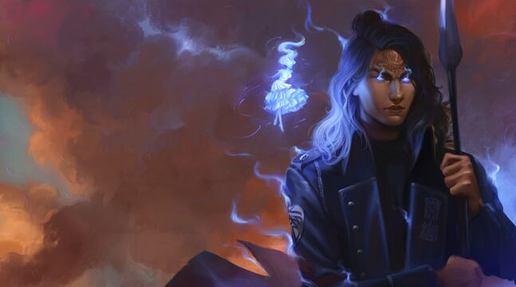

DALINAR KHOLIN
“
Veo belleza en ti, Dalinar Kholin. Veo a un gran hombre luchando contra uno terrible.
”
—Evi a Dalinar.[2]
Dalinar Kholin.[3]
Dalinar Kholin, también conocido como Espina Negra, es un miembro alezi de la Orden de los Forjadores de Vínculos, vinculado al Padre Tormenta. Es el líder de facto de los Caballeros Radiantes reformados. Es el hermano menor de Gavilar, tío de Elhokar y actual reina de Alezkar Jasnah Kholin. Actualmente está casado con Navani Kholin, la viuda de Gavilar. Tiene dos hijos, Adolin y Renarin de Evi, su primera esposa. Antes de renunciar al título, dejando que Adolin tomara su lugar, Dalinar era el alto príncipe del principado de Kholin.
KALADIN BENDITO POR LA TORMENTA
“
Yo tampoco sé lo que soy. ¿Un hombre del puente? ¿Un cirujano? ¿Un soldado? ¿Un esclavo? Esas son solo etiquetas. Por dentro, soy yo. Soy muy diferente de lo que era hace un año, pero no puedo preocuparme por eso, así que sigo moviéndome y espero que mis pies me lleven a donde necesito ir.
”
—Kaladin a Sylphrena.[4]
Kaladin, apodado Kal, conocido como Kaladin Bendito por la Tormenta, es un Corredor del Viento de los Caballeros Radiantes de Alethkar. A pesar de haber sido entrenado como cirujano desde una edad temprana por su padre, su profesión elegida es la de soldado. Es famoso como el capitán de la guardia personal del Alto Príncipe Dalinar Kholin, una unidad conocida como Puente Cuatro, y comandante del batallón de hombres del puente.

Kaladin.[5]
SHALLAN DAVAR
“
Busco la verdad. Donde quiera que esté, quien quiera que lo tenga. Eso es lo que soy.
”
—Shallan a Iyatil.[6]
Shallan Davar, también conocida como Velo o Radiante, es una tejedora de luz de ojos claros de los Caballeros Radiantes de Jah Keved. Shallan es una académica emergente cuyo mayor logro es el descubrimiento de la legendaria ciudad de Urithiru. También es reconocida por su extraordinario talento para reproducir con precisión incluso escenas fugaces con precisión fotográfica.
Shallan Davar.[7]
NAVANI KHOLIN
“
Ella siempre afirmó que no era una erudita, sino una protectora de los eruditos. (...) Cualquiera que haya visto la luz en sus ojos cuando saca otra hoja y esboza más sus ideas, te das cuenta de que está siendo demasiado modesta.
”
—Dalinar.[8]
Navani Kholin es una alezi que vive en Roshar. Ella es la viuda de Gavilar Kholin y la madre de Jasnah y Elhokar Kholin. Ella era la cuñada de Dalinar Kholin y tía de Adolin y Renarin Kholin hasta que se casó con Dalinar. También es una reconocida erudita y artifabriana.
Navani Kholin.[9]
SZETH HIJO HONOR
“
Yo era sin verdad. Simplemente seguí órdenes. Dime. ¿Crees que eso absuelve a un hombre?
”
—Szeth a Taravangian.[10]
Szeth hijo Honor, anteriormente Szeth hijo hijo Vallano o Szeth-son-Neturo, Sinverdad de Shinovar, es un hombre Shin de Roshar. Es el infame Asesino de Blanco y es responsable de la muerte de Gavilar Kholin, que inició la Guerra del Pacto de Venganza. Como Asesino, empuña la hoja de honor de Jezrien; finalmente, la pierde y recibe el don de Sangre Nocturna.
Szeth.[11]